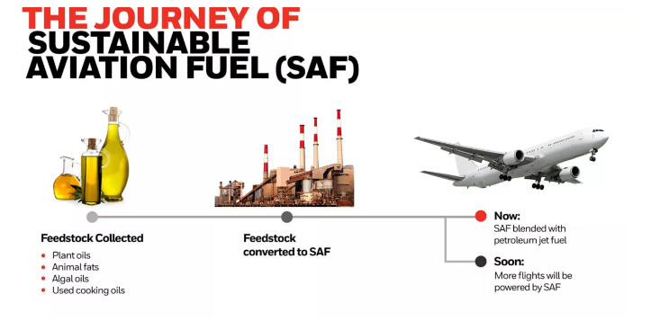

Introduction to Aviation Fuels
Aviation fuels are specialized fuels used for powering aircraft, and
they differ from other fuels used for transportation, such as gasoline
or diesel, in terms of their properties, composition, and performance
requirements.
The two most commonly used types of aviation fuels are jet fuel and
aviation gasoline. Jet fuel is used to power turbine engines, which
are typically found on commercial airliners, military aircraft, and
some business jets. Aviation gasoline, on the other hand, is used to
power piston engines, which are typically found on small general
aviation aircraft.
Jet fuel typically has a higher energy density than aviation gasoline,
meaning that it can produce more power per unit of fuel. Jet fuel also
has a higher flash point and lower volatility than gasoline, which
makes it safer to handle and store.
Aviation fuel composition typically includes hydrocarbons (such as
naphtha, kerosene, and aromatics), oxygenates (such as ethanol), and
additives (such as antioxidants and metal deactivators). The exact
composition of aviation fuels can vary depending on the intended use
and performance requirements.
In addition to jet fuel and aviation gasoline, there are also
alternative fuels being developed for aviation, including biofuels and
synthetic fuels. These fuels are being developed to reduce emissions
and improve sustainability, while still meeting the high-performance
requirements of aviation.
1. Chemical Properties of Aviation Fuels
Boiling point: The boiling point of an aviation fuel
is the temperature at which it will vaporize. The boiling point of a
fuel is important because it determines how well it will flow through
the fuel system and how easily it will be ignited. Aviation fuels have
a boiling point range of 150-315 degrees Fahrenheit.
Density: The density of an aviation fuel is its mass
per unit volume. The density of a fuel is important because it
determines how much fuel is needed to power an aircraft. Aviation
fuels have a density of about 0.80 grams per cubic centimeter.
Viscosity: The viscosity of an aviation fuel is its
resistance to flow. The viscosity of a fuel is important because it
determines how easily it will flow through the fuel system and how
well it will atomize in the combustion chamber. Aviation fuels have a
viscosity of about 1.5 centistokes at 100 degrees Fahrenheit.
Flashpoint: The flashpoint of an aviation fuel is the
temperature at which it will vaporize and form an ignitable mixture
with air. The flashpoint of a fuel is important because it determines
how easily it will ignite. Aviation fuels have a flashpoint of at
least 100 degrees Fahrenheit.
Octane rating: The octane rating of an aviation fuel
is a measure of its resistance to knocking. Knocking is a pre-ignition
of the fuel-air mixture in the combustion chamber. The octane rating
of a fuel is important because it determines how well it will perform
in high-compression engines. Aviation fuels have an octane rating of
at least 80.
In addition to these chemical properties, aviation fuels also contain
a number of additives that improve their performance and safety. These
additives include:
Antioxidants: Antioxidants prevent the fuel from
oxidizing and forming harmful deposits.
Corrosion inhibitors: Corrosion inhibitors prevent
the fuel from corroding the fuel system.
Metal deactivators: Metal deactivators prevent the
fuel from reacting with metals in the fuel system.
Static dissipators: Static dissipators prevent the
build-up of static electricity in the fuel system.
Aviation fuels are a vital part of aviation safety and performance.
The chemical properties of aviation fuels are carefully controlled to
ensure that they meet the needs of aircraft operators.
2. Fuel Additives
Octane boosters: Octane boosters increase the octane rating of
aviation fuel, which helps to prevent knocking. Knocking is a
pre-ignition of the fuel-air mixture in the combustion chamber, which
can damage the engine.
Corrosion inhibitors: Corrosion inhibitors prevent the fuel from
corroding the fuel system. This can help to extend the life of the
fuel system and prevent leaks. Detergent/ dispersants: Detergent/
dispersants clean the fuel system and remove deposits that can build
up over time. This can help to improve fuel efficiency and reduce
emissions.
Moisture inhibitors: Moisture inhibitors prevent water from absorbing
into the fuel. Water can cause corrosion and can also lead to engine
damage.
Ethanol: Ethanol is a renewable fuel that can be blended with aviation
fuel. Ethanol can improve fuel economy and reduce emissions.
Biodiesel: Biodiesel is a renewable fuel that can be made from
vegetable oil or animal fat. Biodiesel can improve fuel economy and
reduce emissions. Fuel additives can be a valuable tool for improving
fuel performance and reducing emissions in aviation. However, it is
important to use the right type of additive for your aircraft and to
follow the manufacturer's instructions.
3. The Chemistry of Combustion
Combustion: Combustion is a chemical reaction that releases energy in
the form of heat and light. Combustion is a complex process that
involves a number of different chemical reactions.
Aviation fuels: Aviation fuels are a type of fuel that is used to
power aircraft. Aviation fuels are made from a variety of different
hydrocarbons, including kerosene, gasoline, and jet fuel.
The chemistry of combustion in aviation fuels: The chemistry of
combustion in aviation fuels is a complex process that involves a
number of different chemical reactions. The most important chemical
reaction that takes place during combustion is the oxidation of
hydrocarbons. Oxidation is a chemical reaction that involves the
combination of oxygen with another substance. In the case of aviation
fuels, the oxygen combines with the hydrocarbons to form carbon
dioxide and water.
The combustion of aviation fuels also produces a number of other
products, including nitrogen oxides, sulfur dioxide, and particulate
matter. These products can contribute to air pollution and climate
change.
The chemistry of combustion in aviation fuels is a complex and
important topic. By understanding the chemistry of combustion, we can
better understand the emissions that are produced by aircraft and how
to reduce them.
The oxidation of hydrocarbons: The oxidation of hydrocarbons is the
most important chemical reaction that takes place during combustion.
The oxidation of hydrocarbons is an exothermic reaction, which means
that it releases heat. The heat released during the oxidation of
hydrocarbons is what powers aircraft engines.
The formation of carbon dioxide and water: When hydrocarbons are
oxidized, they react with oxygen to form carbon dioxide and water.
Carbon dioxide is a greenhouse gas, which means that it traps heat in
the atmosphere. Water is a non-greenhouse gas.
The formation of nitrogen oxides: Nitrogen oxides are formed when
nitrogen and oxygen react at high temperatures. Nitrogen oxides are
greenhouse gases and can contribute to acid rain.
The formation of sulfur dioxide: Sulfur dioxide is formed when
sulfur-containing hydrocarbons are oxidized. Sulfur dioxide is a
greenhouse gas and can contribute to acid rain.
The formation of particulate matter: Particulate matter is formed when
hydrocarbons are incompletely burned. Particulate matter can
contribute to air pollution and can be harmful to human health.
The combustion of aviation fuels is a very complex process that produces a
number of different products. Some of these products, such as carbon
dioxide and water, are non-toxic. Other products, such as nitrogen
oxides, sulfur dioxide, and particulate matter, can be harmful to
human health and the environment.
4. How Fuel Affects Aircraft Peforamnce
Thrust: The thrust of an aircraft engine is the force that propels the
aircraft forward. The thrust of an engine is determined by the amount
of fuel that is burned and the efficiency of the combustion process.
The chemistry of the fuel can affect both of these factors. For
example, fuels with a higher octane rating can burn more efficiently,
which can lead to increased thrust.
Range: The range of an aircraft is the distance that it can travel on
a single tank of fuel. The range of an aircraft is determined by the
amount of fuel that it can carry and the efficiency of the engine. The
chemistry of the fuel can affect both of these factors. For example,
fuels with a higher energy density can allow an aircraft to carry more
fuel, which can lead to increased range.
Efficiency: The efficiency of an aircraft is the ratio of the distance
that it can travel to the amount of fuel that it consumes. The
efficiency of an aircraft is determined by a number of factors,
including the design of the aircraft, the efficiency of the engine,
and the chemistry of the fuel. The chemistry of the fuel can affect
efficiency in a number of ways. For example, fuels with a lower
viscosity can flow more easily through the fuel system, which can lead
to increased efficiency. The chemistry of fuel can have a significant
impact on aircraft performance. By understanding the chemistry of
fuel, we can design aircraft that are more efficient, have a longer
range, and produce fewer emissions.
5. Impact of Aviation Fuel on the Environment
Emissions from aviation fuel: Aviation fuel produces a number of
emissions, including carbon dioxide (CO2), nitrogen oxides (NOx),
sulfur oxides (SOx), particulate matter (PM), and water vapor.
Impact of emissions on the atmosphere: The emissions from aviation fuel can
have a number of impacts on the atmosphere, including:
Climate change:
CO2 is a greenhouse gas, which means that it traps heat in the
atmosphere. The combustion of aviation fuel releases CO2 into the
atmosphere, which contributes to climate change. Air pollution: NOx,
SOx, and PM can contribute to air pollution. Air pollution can cause a
number of health problems, including respiratory problems, heart
disease, and cancer. Climate change: Water vapor is a greenhouse gas,
which means that it traps heat in the atmosphere. The combustion of
aviation fuel releases water vapor into the atmosphere, which
contributes to climate change.
The aviation industry is a major contributor to climate change. In
2019, the aviation industry was responsible for 2.4% of global carbon
dioxide emissions. The aviation industry is working to reduce its
emissions, but it is a challenge. Aircraft engines are becoming more
efficient, but they are still relatively inefficient compared to other
modes of transportation. There are a number of things that can be done
to reduce the impact of aviation fuel on the environment. These
include: Improving the efficiency of aircraft engines: This is the
most important thing that can be done to reduce the impact of aviation
fuel on the environment. Using alternative fuels: Alternative fuels,
such as biofuels, can reduce the emissions from aviation fuel.
Offsetting emissions: This involves investing in projects that reduce
greenhouse gas emissions elsewhere, such as planting trees.

5. The Role of Biofuels in Aviation
Biofuels: Biofuels are fuels that are made from renewable resources,
such as plants and animals. Biofuels can be used to replace or blend
with traditional fossil fuels, such as petroleum. The role of biofuels
in aviation: Biofuels can play a role in reducing the environmental
impact of aviation. Biofuels can reduce emissions of greenhouse
gasses, such as carbon dioxide. Biofuels can also reduce emissions of
other pollutants, such as particulate matter and nitrogen oxides. The
use of biofuels in aviation: Biofuels are currently being used in
aviation in a limited capacity. However, the use of biofuels in
aviation is expected to increase in the future. The aviation industry
is working to develop new technologies that will make it easier and
more cost-effective to use biofuels.
The chemical composition and properties of biofuels: Biofuels are made
from a variety of different renewable resources, such as plants and
animals. The chemical composition of biofuels varies depending on the
source material. However, all biofuels are made up of carbon,
hydrogen, and oxygen. Biofuels have a lower energy density than
traditional fossil fuels. This means that biofuels require more volume
to store the same amount of energy. Biofuels also have a lower octane
rating than traditional fossil fuels. This means that biofuels may not
perform as well in some aircraft engines. Biofuels have the potential
to play a role in reducing the environmental impact of aviation.
However, there are a number of challenges that need to be addressed
before biofuels can be used on a large scale. These challenges include
the cost of biofuels, the availability of biofuels, and the
compatibility of biofuels with aircraft engines. The aviation industry
is working to address these challenges. The industry is investing in
research and development to make biofuels more cost-effective and
available. The industry is also working to develop new technologies
that will make it easier to use biofuels in aircraft engines.
6. The Future of Aviation Fuels
The future of aviation fuels is a topic of much discussion and debate.
The aviation industry is facing increasing pressure to reduce its
environmental impact, and the use of sustainable aviation fuels (SAFs)
is seen as one way to achieve this.
SAFs are made from renewable sources, such as plants, algae, or
municipal waste. They can be used to replace or blend with traditional
fossil fuels, and they can offer a number of environmental benefits.
For example, SAFs can reduce emissions of greenhouse gasses, such as
carbon dioxide, and they can also reduce emissions of other
pollutants, such as particulate matter and nitrogen oxides.
There are a number of different types of SAFs being developed, and the
technology is still in its early stages. However, there is a lot of
potential for SAFs to play a role in the future of aviation. The
aviation industry is working to scale up the production of SAFs, and
there are a number of initiatives underway to support this. For
example, the Sustainable Aviation Fuels Alliance (SAFA) is a global
collaboration of airlines, airports, governments, and fuel producers
that is working to accelerate the development and use of SAFs.
The future of aviation fuels is bright. SAFs have the potential to
make a significant contribution to reducing the environmental impact
of aviation. As the technology continues to develop, and as the cost
of SAFs comes down, we can expect to see more and more SAFs being used
in the aviation industry.
SOURCES
Shell.com - Aviation Fuel
NAA.edu - Aviation Fuel
FAA.gov - Avgas
Petrobras.com - Aviation Kerosene
Purdue.edu - Aviation Fuel
Energy.gov - Sustainable Aviation Fuels
4air.aero - Sustainable Aviation Fuels